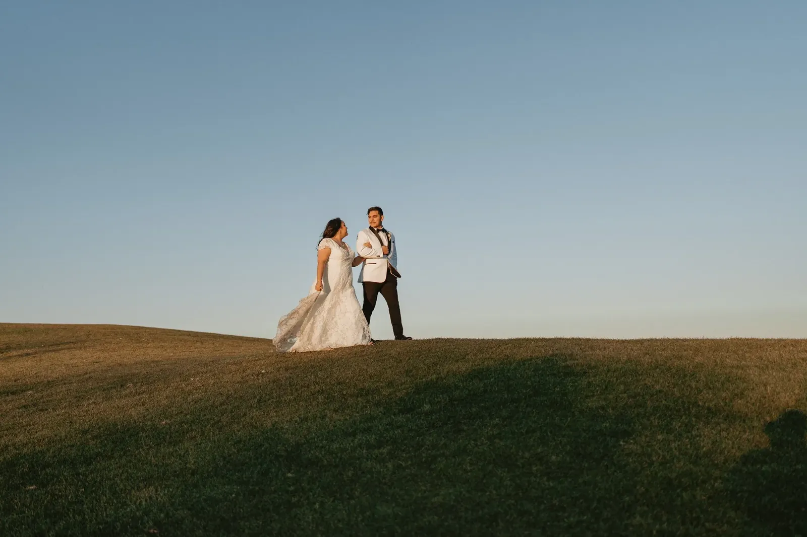

Step 01 / 03Day 1
Submit an inquiry
Fill out the form, or message us on Instagram or Facebook with any questions at all. The more you tell us about your day, the better.


Documentary-style wedding photos and cinematic films by husband-and-wife team Dan & Lydia Reynolds.
We're Dan & Lydia, a husband-and-wife team telling love stories through honest photographs and cinematic film so you can feel your day all over again.
One team with one shared vision, so your photos and your film feel like they belong together.


Delivered for every hour of coverage. A first look adds about 40% more.
Two artists at every wedding.
Dan leads photo and film while Lydia shoots alongside, keeping the day calm and flowing.
Couples are already booking more than 18 months ahead. Check your date today.
“We worked with Dan and his wife Lydia for our engagement and wedding photos and video, and we cannot recommend them enough! They were energetic, friendly and made us feel so comfortable. All our guests even commented on how great they were!”
Your teaser film lands within two weeks, ready to share while the glow is still fresh.
From first hello to the moment you hold your gallery, the process is calm, clear and personal.
Fill out the form, or message us on Instagram or Facebook with any questions at all. The more you tell us about your day, the better.
We'll answer your questions and show you how we'll capture your day with authenticity, artistry and emotion, so you can relive every moment exactly as it happened.

Lock in your date, then relax. Every emotion, vow and joyful moment will be preserved beautifully for a lifetime, with a blend of cinematic artistry and honest storytelling.
Energetic, friendly and calm. Here's what it feels like to have us there on the day.

“Words cannot describe how amazing it was to work with Dan and Lydia for our wedding photography!”

“We worked with Dan and his wife Lydia for our engagement and wedding photos and video, and we cannot recommend them enough! They were energetic, friendly and made us feel so comfortable. All our guests even commented on how great they were!”

“I just wanted to express how grateful we are for what an incredible experience it was. Thank you for your professionalism, but also for being so personable.”